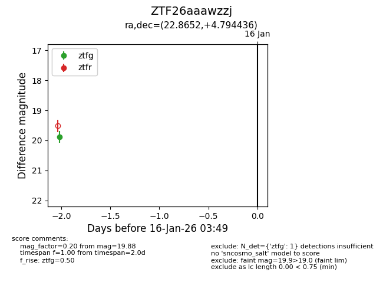
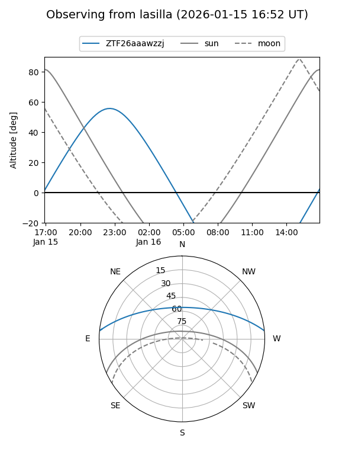
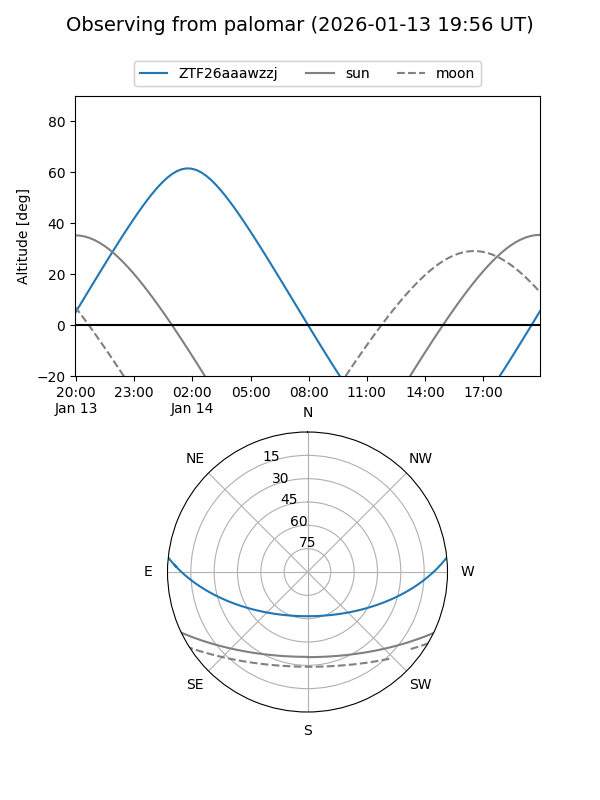

ZTF26aaawzzj
Target ZTF26aaawzzj at 2026-01-16 03:50
Aliases and brokers:
FINK: link
Lasair: link
ALeRCE: link
alt names
ZTF26aaawzzj (ztf,fink_ztf)
Coordinates:
equatorial (ra, dec) = 22.8652,+4.79444
equatorial (HMS+DMS) = 01:31:27.65,+04:47:39.97
galactic (l, b) = (141.2863,-56.64431)
Flags:
Photometry:
last ztfg=19.88
1 ztfg detections
Lightcurve

Visibility


Additional plots